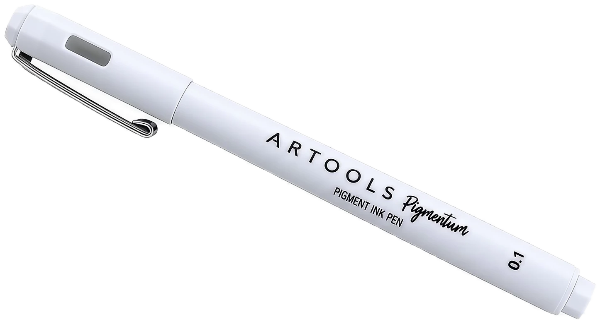
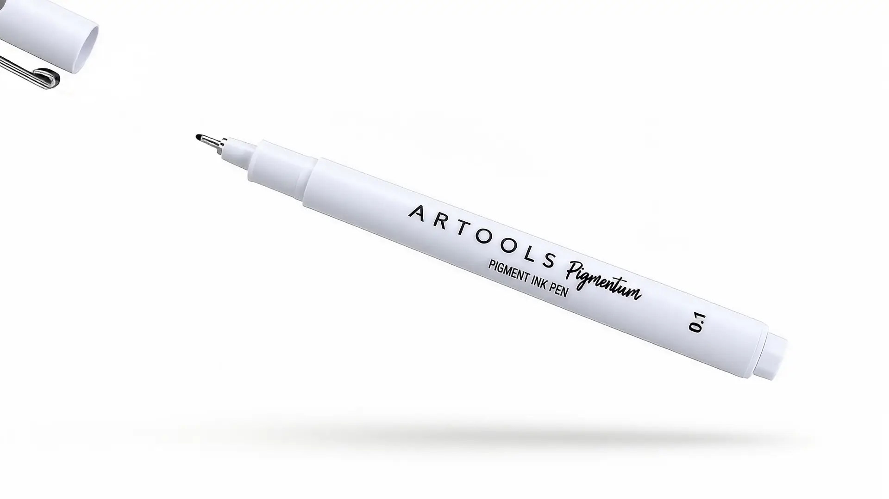
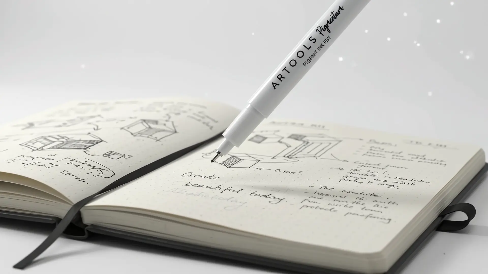
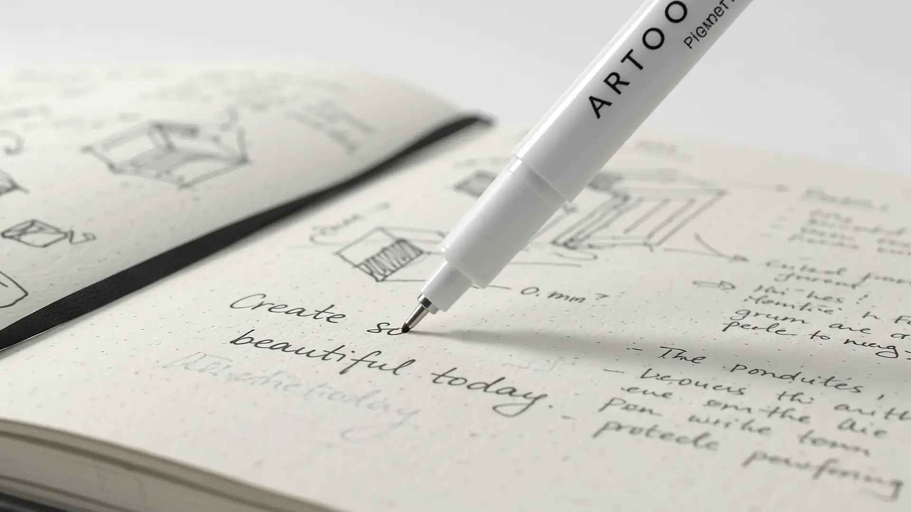
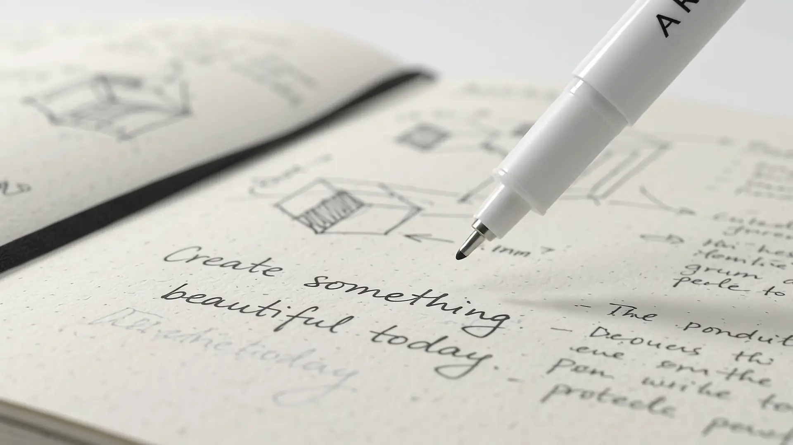
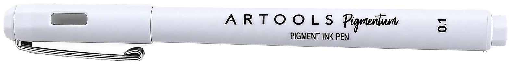
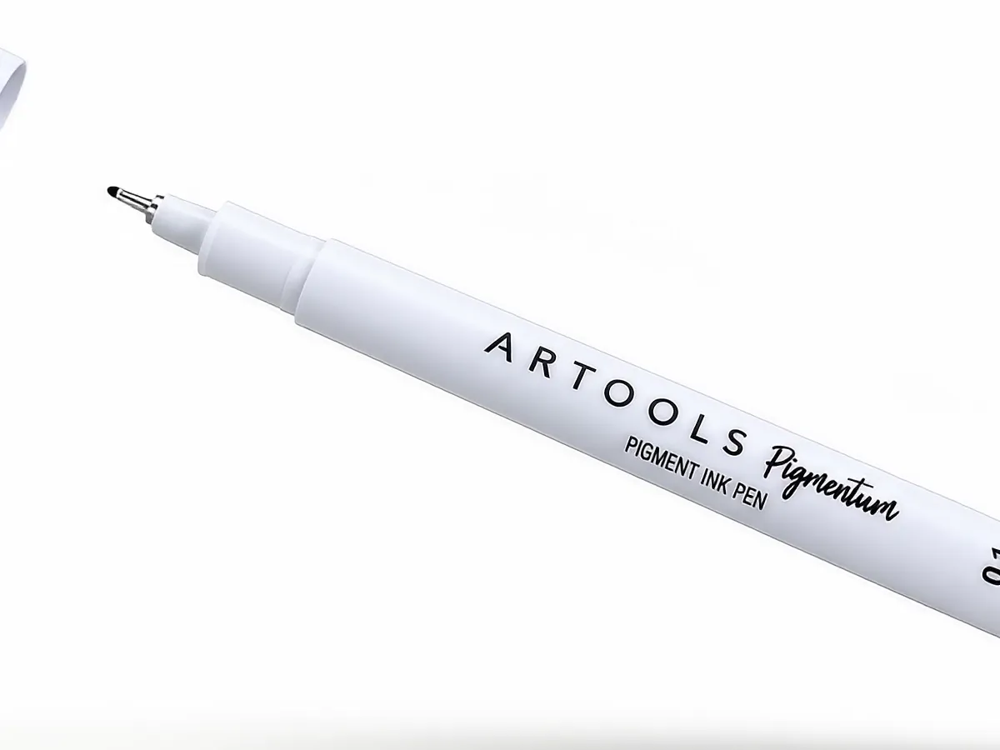
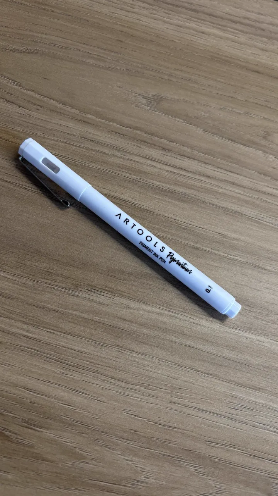

Ponta de 0.1 mm
Fibra de alta densidade guiada por tubo metálico: linhas finas, nítidas e constantes do primeiro ao último traço.
Precision Series
A Artools Precision Pen redefine o equilíbrio entre peso, fluxo e design. Feita para criadores que exigem perfeição em cada traço.

Fibra de alta densidade guiada por tubo metálico: linhas finas, nítidas e constantes do primeiro ao último traço.
Centro de massa calibrado para a mão descansar. A caneta trabalha — você só conduz.
Pigmento à base d’água que fixa no papel em segundos. Sem borrões, nem com marcador por cima.

Fibra de alta densidade guiada por tubo metálico: linhas finas, nítidas e constantes.

Centro de massa calibrado para a mão descansar.

Pigmento que fixa no papel em segundos, sem borrões.

Cada componente da Pigmentum 0.1 existe por um motivo: dar à sua mão a mesma linha, sempre. Nada a mais, nada a menos.

Fig. 01 — Pigmentum 0.1, vista lateral com tampa Fig. 02 — Ponta 0.1, ampliada

Fibra de alta densidade guiada por tubo metálico.
Clipe em aço que prende no caderno sem marcar a capa.
Polipropileno de toque seco, que não escorrega.

Centro de massa no meio do corpo: leve, sem pender.
Proporção clássica de fineliner, cabe em qualquer estojo.
Preta, à base d’água, à prova d’água e resistente à luz.
Fluxo, pigmento e ponta foram projetados juntos. O resultado é uma linha que não muda — nem de espessura, nem de cor, nem com o tempo.
Espessura do traço, constante em qualquer ângulo de escrita.
Para a tinta pigmentada fixar no papel.
De linha contínua por carga de tinta.
Pigmento arquival: à prova d’água e resistente à luz.
Um canal de alimentação calibrado entrega a mesma quantidade de tinta a cada milímetro — sem falhas, sem excesso.
Partículas finas assentam na fibra do papel em vez de se espalhar: bordas nítidas e preto profundo.
A fibra é guiada por um tubo de aço que preserva a geometria da ponta, mesmo com régua e esquadro.
Seis motivos para a Pigmentum 0.1 virar a primeira caneta do estojo — do rascunho ao arte-final.
A mesma espessura do primeiro rabisco ao último detalhe, sem engrossar com a pressão.
Fluxo reguladoDepois de seca, a tinta não sai com água nem borra sob aquarela ou marcador.
Pigmento seladoPigmento resistente à luz: seus cadernos continuam pretos daqui a muitos anos.
Não desbota9 g bem distribuídos e corpo fosco que não escorrega em sessões longas.
ErgonomiaFunciona sobre papel pontilhado, sulfite, Canson e por baixo de marcadores à base de álcool.
MultissuperfícieA ponta com tubo metálico desliza junto à régua sem perder o formato.
Desenho técnicoPrecision Pen Pigmentum 0.1. Entrega para todo o Brasil e troca garantida em 30 dias.